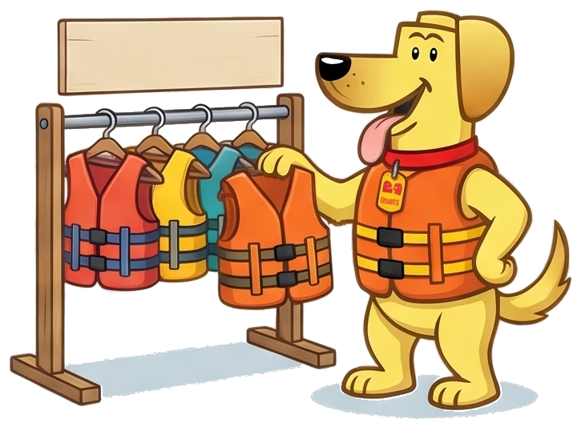

Ranger BuckRanger
Ranger BuckRanger Ranger ToroRanger
Ranger ToroRanger CorkeyBobber’s pal
CorkeyBobber’s pal
Wear your life jacket
Wear a properly fitted, U.S. Coast Guard-approved life jacket when you’re in, on, or around open water.
ESPAÑOL · BORRADOR
Usa tu chaleco salvavidas. Debe ser de la talla correcta y estar aprobado por la Guardia Costera de EE. UU. Úsalo dentro, sobre o cerca de aguas abiertas.